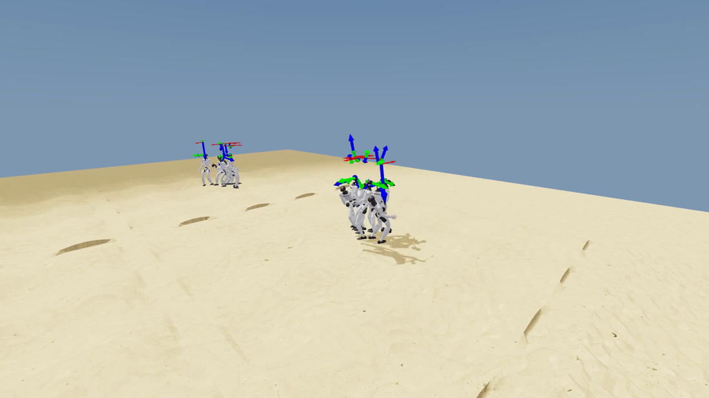
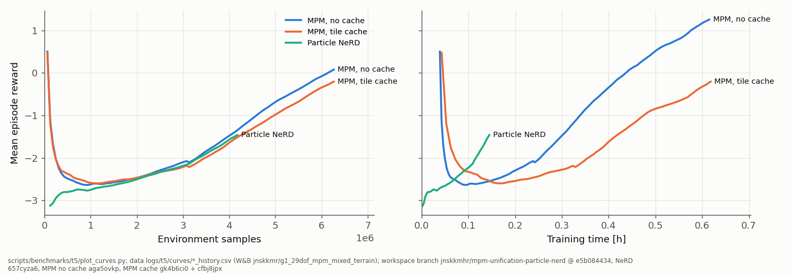
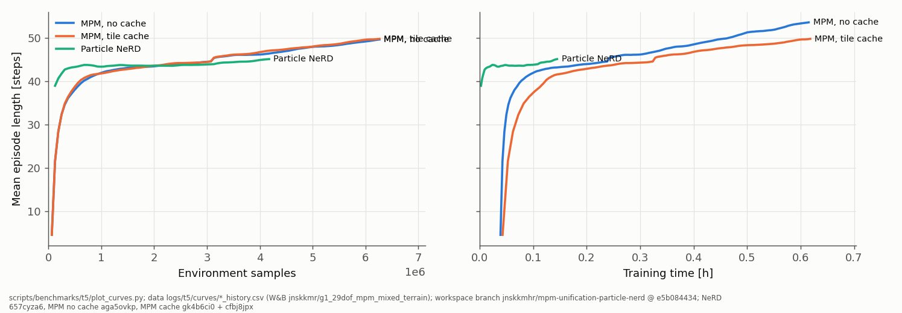
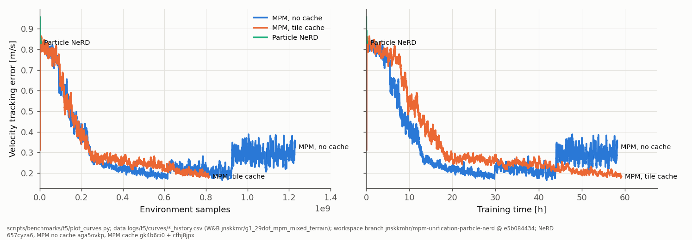
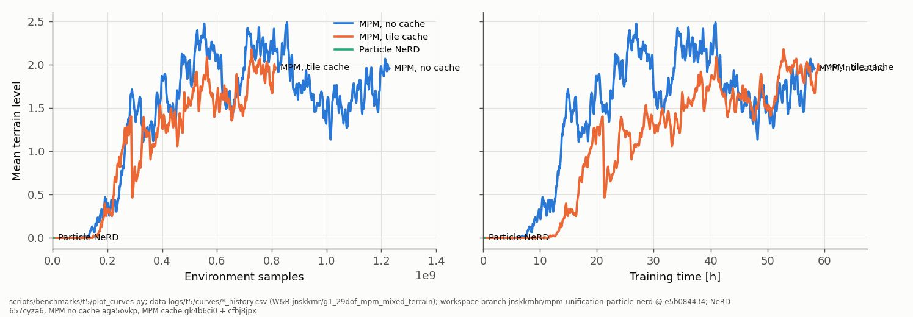
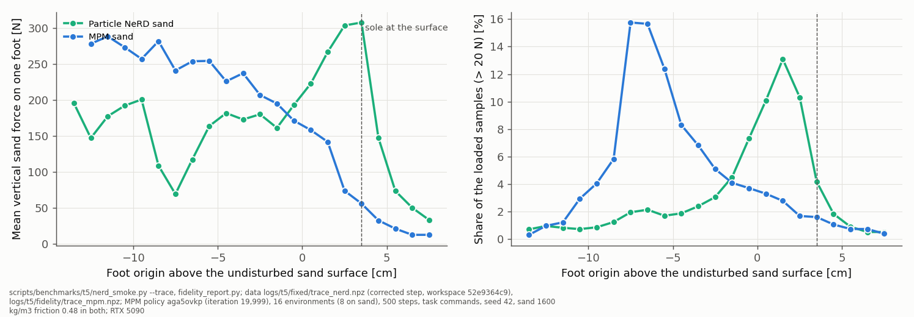

A G1 walking policy trained on Particle NeRD instead of MPM
Slides built 2026-11-25 09:08 PST. Every result is unchecked. The record is outputs/T5.md. Status: corrected training is running and watched: about iteration 100 of 20,000 at 09:07 PST on 2026-11-25.
Particle NeRD now steps the sand of the mixed-terrain G1 task and a corrected training is running; on one GPU an environment step takes 184 ms against 274 to 326 ms with MPM, and the NeRD sand yields about half to three quarters as much as MPM sand under the same policy.
Correction, 2026-11-25. Until 08:40 PST the NeRD step replayed from its recorded CUDA graph was faulty (found by the independent check): the network searched its neighbours in the wrong hash grid, and the sand barely moved. The first training (rcvgr7b9) ran on that sand and was cancelled at iteration 2,710. Everything measured on it is superseded and is not shown here.
Same task as the MPM reference run aga5ovkp: robot, terrain mix, rewards, PPO, 40 GPUs x 64 environments. Only the sand solver, the sand material (one sand, not randomized) and the particle sampling differ.
Sim-to-sim into MPM: not measured yet for the corrected training.
Setup
What was swapped unchecked
Only the sand changes: solver, material and particle sampling; the rest of the task is the reference's.

Training view of the Particle NeRD task (64 environments, 32 on sand; the sand particles are not drawn in the training view, as in the reference). Frame 60 of the video written by the local 4-iteration training test, isaaclab train … --task IsaacContrib-Velocity-G1-29dof-ParticleNeRD-Mixed --num_envs 64 --viz newton_gl --video, RTX 5090, workspace commit 0402c2ba6.
MPM reference (aga5ovkp)
Particle NeRD run
Sand solver
Implicit MPM, streaming pool, sleeping (solver_cfg_no_cache)
Particle NeRD network (local model, checkpoint d4cbed5e…), same streaming pool rule
Sand material
Randomized at reset: density 1000–3000 kg/m³, friction 0.3–0.9, stiffness, yield pressure
One sand: 1600 kg/m³, friction 0.48 (NeRD's training material), not randomized
Particles
Spacing 0.032 m, jitter ±0.025 m, radius and mass from the spawner
Spacing 0.032 m, jitter ±0.0064 m, radius 0.016 m, mass 0.0524 kg (NeRD's training data)
Stepped particles
Awake sand in a 1.2 m box around the pelvis
1,536 particles nearest the feet (of 20,000 per sand environment)
Everything else
Robot, 5 terrain types each once rigid and once sand, curriculum, 24 rewards, terminations, PPO, seed 42, 40 GPUs x 64 environments, 20,000 iterations
the same
How it was checked
scripts/benchmarks/t5/config_diff.py compares the resolved task with the W&B config of aga5ovkp (1,802 entries): 128 differ, all in the groups above or run-time paths. It also showed that the worktree's command config had changed since the reference (standing environments 0.2 → 0.0); the NeRD task uses the reference's 0.2. Files: logs/t5/reference/diff_*_vs_aga5ovkp.json.
Criterion 1
Rollout error against horizon
Not done in this session.
Not done. The request for this night was the combined code and the policy training. Related, measured in closed loop with the MPM policy: the two fidelity slides near the end.
Criterion 2 · speed (GPU time)
Throughput and memory against MPM unchecked
On one GPU the NeRD environment step is 1.5 to 1.8 times faster than MPM's and uses a fifth of the memory; the sand step alone is 3.6 times faster, and rigid collision detection, shared by both, now dominates the step.
64 environments (32 on sand) on one RTX 5090, MPM policy walking, CUDA graph
Particle NeRD (corrected step)
MPM, reference config
Environment step, two runs [ms]
184.2, 184.4
325.9, 274.4
Environment steps per second
347, 347
196, 233
GPU memory of the process [MiB]
3,430
17,392
Time of one physics step by part, measured eagerly (no CUDA graph, device synchronized around every call), zero actions (the robots are falling), 64 environments of which 32 on sand, second half of 30 environment steps. Eager execution was not affected by the graph fault. Script scripts/benchmarks/t5/profile_step.py and plot_speed.py; data logs/t5/smoke/profile_{mpm,nerd}_64.txt; workspace commit 6d9251e7d; RTX 5090. MPM: task IsaacContrib-Velocity-G1-29dof-MPM-Mixed, physics=solver_cfg_no_cache.
Training on OSMO (W&B Perf/*)
Particle NeRD, corrected run
MPM aga5ovkp
GPUs x environments
40 x 64 (NVIDIA L40)
40 x 64 (NVIDIA L40S)
Iterations so far
68
20,000
Mean time per iteration so far [s]
7.78
16.50 over the same iterations
Time per iteration (collection plus learning) and samples per second of all GPUs against samples, rolling mean over 50 iterations. Script scripts/benchmarks/t5/plot_curves.py; data logs/t5/curves/*_history.csv (W&B); workspace ~/isaac/worktrees/mpm-unification/IsaacLab-particle-nerd, branch jnskkmhr/mpm-unification-particle-nerd, commit e5b084434 (clean). The MPM runs used L40S (no cache) and L40S then L40 (cache); the NeRD run uses L40, so this is not a same-GPU comparison.Conditions and limits
One GPU, same GPU for both: the NeRD environment step is 1.5 to 1.8 times faster (184 ms against 274 and 326 ms; the MPM time differs by 19% between two identical runs because the reference config draws the sand material at random at every reset).
The sand step alone is 3.6 times faster eagerly (7.6 against 27.4 ms), but rigid collision detection (robot link meshes against the terrain mesh, the same code in both tasks) is the largest part of the eager physics step with either sand solver (about 40 ms). Its share under the recorded graph was not measured.
Iteration time depends on the training stage (resets are expensive and episodes are short at the start), and the two trainings ran on different GPU types, so the OSMO comparison is indicative.
MPM out-of-memory point by environment count: not measured.
Criterion 3
Break-even
Not done.
Not done. Found so far: the network training of the bundled checkpoint ran about 30.6 h on 4 x L40 (about 122 GPU hours; workflow particle-nerd-local-v11-train-1 or …-restwin-train-1, not determined which). The GPU count of the data generation workflows was not read.
Criterion 4 · reward curves
Learning curves against MPM unchecked
After 68 of 20,000 iterations the corrected NeRD run is at reward -1.8 (MPM at the same iteration: -1.7); the rewards are not comparable as scores, because the NeRD task has one sand and the MPM task a range.
Mean episode reward against environment samples (left) and against training time (right; the sum of collection and learning time of every iteration), rolling mean over 50 iterations. Particle NeRD: W&B 657cyza6 (OSMO g1-nerd-mixed-no-cache-3, 40 x L40). MPM without cache: aga5ovkp (40 x L40S). MPM with tile cache: gk4b6ci0 continued by cfbj8jpx (still running). Script scripts/benchmarks/t5/plot_curves.py; data logs/t5/curves/*_history.csv; workspace ~/isaac/worktrees/mpm-unification/IsaacLab-particle-nerd, branch jnskkmhr/mpm-unification-particle-nerd, commit e5b084434 (clean).

The same curves over the part of the training that the Particle NeRD run has reached (1.5 x its samples).Episode length, tracking error, terrain level

Mean episode length over the part reached so far.Mean episode length; same runs and script.

Velocity tracking error (W&B Metrics/base_velocity/error_vel_xy); same runs and script.

Mean terrain level of the curriculum; same runs and script.
Metrics/success_rate is 0 in every iteration of both MPM runs, so there is no success curve to overlay.
Criterion 5 · sim-to-sim
The NeRD-trained policy in MPM
Not measured yet for the corrected training.
Not done. The corrected training (started 2026-11-25 08:45 PST) has no checkpoint that walks yet; evaluations are planned at iterations about 5,000, 10,000, 15,000 and the end, each with the MPM policy at the same iteration and at its final checkpoint. Superseded: the policy of the cancelled first training (faulty, nearly rigid NeRD sand) at iteration 2,000 failed on MPM sand (2.4 episode ends per robot in 10 s against none in NeRD); that says nothing about the corrected training, and it had no MPM control at the same iteration.
Criterion 6
What NeRD was trained on, and where the task leaves it unchecked
NeRD is extrapolating in every sand environment: it never saw a foot load, a tilted floor, slopes above 10° or the task's waves.
NeRD training data
Mixed-terrain task with NeRD
Material
one dry sand: 1600 kg/m³, friction 0.48, no cohesion
the same (task reduced to it); the MPM policy saw 1000–3000 kg/m³, friction 0.3–0.9
Bed
2.0 x 1.2 x 0.30 m in a tray with a horizontal floor
pool of 1.6 x 1.6 x 0.25 m that follows the pelvis; the floor is the terrain
Surface
flat; plane tilted ±10°; wave of 0.06 m amplitude, 1.2 m long
layer of constant depth on slopes up to 22.9°, waves up to 0.4 m amplitude, steps of 2–8 cm
Bodies
one box, cube, sphere or cylinder of 0.84–4.4 kg: pushed, pressed, dropped, resting
two feet of a walking 35 kg humanoid
Discretization
particle spacing 0.032 m, MPM voxel 0.04 m, 5 ms
the same
Source: scripts/neural/scene.py, dataset.py and the checkpoint's stored config in ~/isaac/IsaacLab-particle-nerd (commit c83f1b0b8); task side from the W&B config of aga5ovkp.
Caveat · fidelity
The corrected NeRD sand yields, but less than the MPM sand it replaces unchecked
With the same sand and the same policy the feet ride about 1.5 to 4.5 cm higher in NeRD than in MPM, and about half as many particles are displaced.
MPM policy aga5ovkp (iteration 19,999) walking for 10 s with the task's commands, 16 environments (8 on sand, 8 on rigid ground), terrain level 0, sand 1600 kg/m³ and friction 0.48 in both simulators, one run each. The foot origin is about 3.5 cm above the sole. Script scripts/benchmarks/t5/nerd_smoke.py, plot_speed.py; data logs/t5/fixed/policy_nerd_16.json (corrected step, workspace 52e9364c9), logs/t5/smoke/policy_mpm_16.json; RTX 5090.Numbers
Particle NeRD sand (corrected)
MPM sand
Rigid ground
Lower foot origin above the surface [cm]
-4.9
-6.5
+2.5
Pelvis height above the surface [m]
0.630
0.643
0.707
Vertical sand force on the feet [N]
295
346
365 (rigid contact)
Velocity tracking error [m/s]
0.127
0.122
0.054
Reward per step
0.202
0.193
0.256
Particles displaced by more than 2 cm, per sand environment (8 environments, 5 s)
469
2,228
One run per number; the value moves with the test: 64 environments give -3.5 and -3.7 cm for NeRD (two runs) against -8.1 cm for MPM, 8 environments give +0.1 to -1.6 cm for NeRD over three seeds.
MPM's sinkage is that of the training discretization (4 cm voxels, 0.25 m bed); T3 evaluates at 2 cm voxels.
The same policy earns about as much reward per step on NeRD sand as on MPM sand here (0.202 against 0.193).
Caveat · fidelity, force
Where the sand carries the foot unchecked
NeRD carries most of the stance force with the sole at the surface and less once the foot is deep; MPM builds the force up as the foot sinks.

Left: mean vertical sand force on one foot in 1 cm bins of the height of the foot origin above the undisturbed surface (the sole is 3.5 cm below the origin; dashed line: sole at the surface). Right: where the loaded samples (above 20 N) are. Same policy (MPM aga5ovkp, iteration 19,999), commands and seed in both simulators, 16 environments (8 on sand), 500 steps, sand 1600 kg/m³ and friction 0.48. Script scripts/benchmarks/t5/nerd_smoke.py --trace, fidelity_report.py; data logs/t5/fixed/trace_nerd.npz (corrected step, workspace 52e9364c9), logs/t5/fidelity/trace_mpm.npz; RTX 5090.
Mean vertical sand force on both feet: 317 N in NeRD against 338 N in MPM; in NeRD part of the weight goes to the rigid support under the sand, which some feet reach (5% of the loaded samples have the foot origin below -18.8 cm; MPM: -10.2 cm).
NeRD was trained on single objects of 0.8 to 4.4 kg (box, cube, sphere, cylinder; pushed, pressed, dropped, resting) and falling sand, on a 2.0 x 1.2 x 0.3 m bed of one dry sand (flat, ±10° slope, 6 cm wave), never on a foot load.
Whether the remaining difference comes from the network or from the wrench solver was analysed only on the faulty step; that analysis is withdrawn and has not been repeated.
Not done / caveats
What weakens these results
The corrected policy is still training, and nothing about transfer is measured yet.
Training not finished. corrected training is running and watched: about iteration 100 of 20,000 at 09:07 PST on 2026-11-25.
A fault in the first version. With the active-particle selection the NeRD step used two hash grids; replayed from a CUDA graph the network then read the wrong grid. Found by the independent check, fixed in workspace commit 52e9364c9 (graph and eager now agree over 300 steps for seeds 42, 54 and 7). The first training (rcvgr7b9, cancelled at iteration 2,710) and every graph-mode number before the fix are superseded.
Two changes at once. The NeRD policy sees one sand, the MPM policy saw a range. A difference between the policies is not attributable to the simulator alone, and the reward curves are not comparable as scores.
The NeRD sand yields less than MPM sand and carries the foot differently (previous slides).
Different GPU type. NeRD on L40, the no-cache MPM reference on L40S.
An illegal memory access at environment seed 54 in the first full run is probably the same hash-grid fault; that was not tested. Graphs are also recorded right after the first step now.
Infrastructure. The nodes of isaac-lab-l40-06 cannot reach the OSMO data storage; the code is shipped as a W&B artifact (jnskkmr/t5_code_bundles) and checkpoints exist on W&B only.
No cache counterpart. A tile cache for the neural solver was not built.
Not done: sim-to-sim of the corrected training, rollout error (criterion 1), break-even (criterion 3), MPM out-of-memory point, hardware.